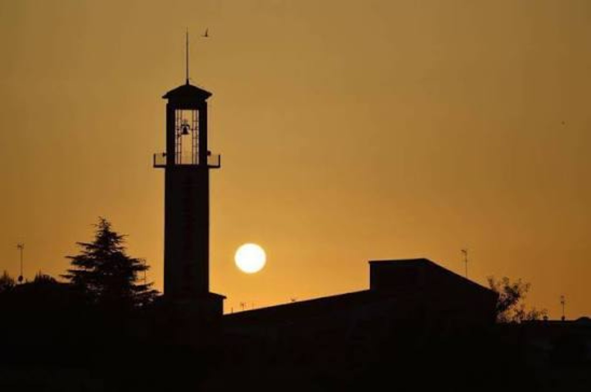

Casas de Haro: nuestra historia
La tierra que nos une
Casas de Haro, en la provincia de Cuenca, forma parte de La Mancha conquense: un paisaje abierto, agrícola y de horizontes largos en el que los caminos forman parte de la vida del pueblo y ofrecen un entorno privilegiado para el ciclismo y las rutas BTT. La viña, los campos de cultivo, el campanario recortado contra el cielo y los amaneceres y atardeceres manchegos son parte de nuestra identidad.
Para nosotros no es solo el lugar desde el que salimos en bicicleta. Es el terreno que conocemos, el que recorremos una y otra vez y el que queremos enseñar a quien pedalea con nosotros.

De cruce de caminos a municipio manchego
La historia de Casas de Haro se remonta mucho más atrás que su actual configuración como municipio. En su término se han localizado vestigios íberos y prerrománicos, y su emplazamiento pudo verse favorecido desde antiguo por su posición en un cruce de cañadas y por la presencia de agua a poca profundidad.
Tras la conquista cristiana de la zona durante el reinado de Alfonso VIII, el territorio quedó vinculado a la Casa de Haro. El primer documento conocido en el que aparece expresamente el nombre de Casas de Haro está fechado en octubre de 1318 y se conserva en el Archivo Municipal de San Clemente. Durante siglos, estas tierras estuvieron ligadas al ámbito de Alarcón hasta que Casas de Haro se constituyó como municipio en 1834, en el contexto de la desaparición de los señoríos del Antiguo Régimen.
La agricultura ha marcado históricamente el paisaje y la vida local. La vid ocupa un lugar especialmente reconocible en la identidad del municipio, acompañada por otros cultivos y por la ganadería tradicional. Ese vínculo con el campo sigue siendo visible hoy en los caminos, parcelas, viñedos y horizontes que atraviesan nuestras rutas.
Entre los elementos patrimoniales más representativos destacan la iglesia parroquial de Santa María Magdalena y la ermita de San Julián, ambas vinculadas al siglo XVIII. También forman parte del patrimonio rural los llamados cubos o cucos: construcciones de piedra utilizadas tradicionalmente como refugio por pastores y agricultores durante las jornadas de trabajo en el campo.
Fuente de referencia: Wikipedia, «Casas de Haro». Texto resumido y adaptado para la web del club a partir de la información histórica y patrimonial del artículo (licencia CC BY-SA).

Mucho más que montar en bici
Casas de Haro BTT nace de algo sencillo: un grupo de amigos, un pueblo y las ganas de compartir kilómetros. Aquí la bicicleta es la excusa para descubrir caminos, cuidarnos, superarnos y mantener vivo el vínculo con nuestra tierra.
Desde los caminos manchegos hasta las rutas que nos llevan más lejos, seguimos pedaleando juntos. No buscamos únicamente sumar kilómetros: buscamos que cada salida deje una historia.
Un símbolo de lo que somos
El nuevo emblema reúne los elementos que nos representan: ciclismo, pueblo, paisaje y tierra.
Un paisaje manchego hecho para descubrirlo en bicicleta
Los caminos agrícolas, los viñedos, la llanura y las carreteras del entorno forman parte de la identidad ciclista de Casas de Haro. El club utiliza el pueblo como punto de salida para rutas BTT y de carretera que recorren distintos rincones de La Mancha conquense. Esta relación entre territorio, bicicleta y vida local es una parte esencial de nuestra historia.
Casas de Haro, Cuenca
Casas de Haro es nuestro punto de partida para disfrutar del BTT y la carretera por los caminos y paisajes de La Mancha conquense.